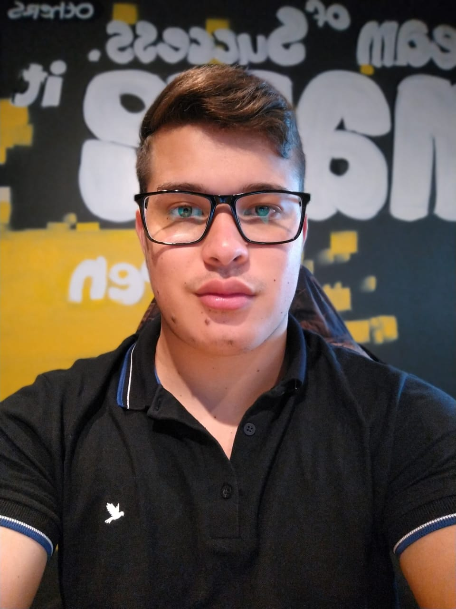

Objetivo: Atuar na area Desenvolvimento de Software.
Igor Natan Ferreira Rodrigues
21 anos
igornatan4@gmail.com
Rua João Antonio da Fonseca
(11) 94009-3916
Analista de sistemas orientado a resultados, com excelentes habilidades de comunicação.
Experiencias profissionais
- Eliane Revestimentos Cerâmicos
Cargo: Promotor de vendas
- Denny Sports
Cargo:Sub-gerente
- Brazil Panels
Cargo: Desenvolvor de Software
Formação Academica
- Fecaf – 2020 (Cursando) Período: Noturno
Análise e desenvolvimento de sistemas
- Fundação Bradesco – MySql
- Fundação Bradesco - HTML5
- Fundação Bradesco - C#
- Fundação Bradesco - HTML5 e CSS